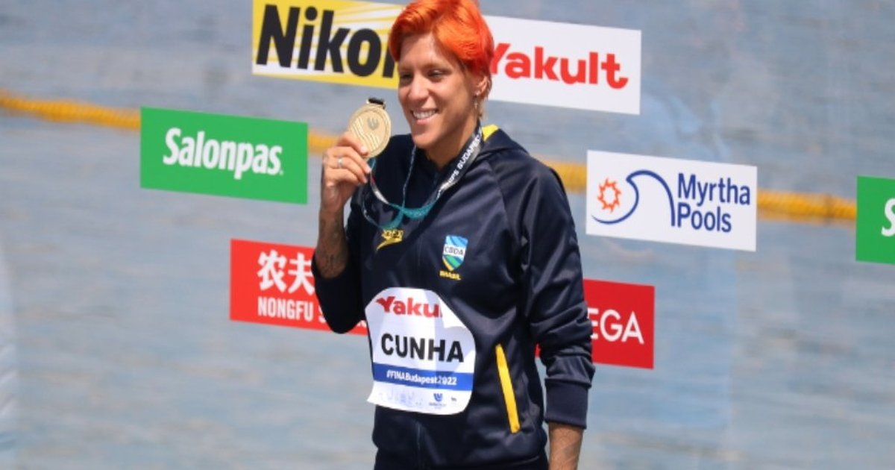
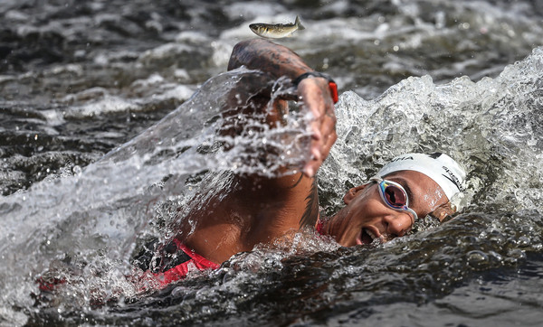

Ana Marcela Cunha encerra parceria com técnico a menos de três semanas do Mundial
26/06/2023 - 15h55min
Faltando menos de três semanas para o início do Campeonato Mundial de Esportes Aquáticosr, a nadadora Ana Marcela Cunha anunciou nesta segunda-feira o rompimento com seu treinador, Fernando Possenti, com quem vinha trabalhando há quase 10 anos. Pelas redes sociais, a campeã olímpica afirmou que a decisão se baseava em sua busca por "saúde mental".
— Objetivando buscar o equilíbrio de sua saúde mental em harmonia com suas atividades de alta performance, comunicamos decisão tomada nesta data pela atleta olímpica Ana Marcela Cunha, com ciência do Time Brasil/COB, no sentido de concluir parceria de cerca de 10 anos de sucesso com o técnico Fernando Possenti, a quem agradece pelas conquistas obtidas — registrou a assessoria da atleta.
O rompimento acontece a menos de três semanas do Mundial de Esportes Aquáticos de Fukuoka, no Japão, entre os dias 14 e 30 de julho.
— Assim como em ocasiões anteriores de proximidade com competições de nível mundial, a atleta permanece em treinamento intensivo e focada em buscar os melhores resultados possíveis e somente estará liberada para entrevistas e reportagens após sua participação no Mundial de Esportes Aquáticos — declarou a atleta, por meio de sua assessoria.
O Comitê Olímpico do Brasil (COB) emitiu nota para informar que está ciente da situação.
— O COB seguirá dando o suporte necessário aos treinamentos da nadadora e apoio para que o técnico realize o trabalho que vem desenvolvendo com outros atletas da seleção de natação visando ao Mundial— disse a entidade.
De acordo com o COB, Ana Marcela deixou a Turquia, onde treinava com Possenti, e viajou para a Itália, onde seguirá sua preparação para o Mundial.
— Ela seguiu viagem para a cidade de Livigno, na Itália, para treinamento em altitude visando à preparação para o Campeonato Mundial de Fukuoka, no Japão, onde fica até o embarque para a competição— registrou o comitê.
—Fernando Possenti segue a programação junto às atletas de natação em Erzurum, na Turquia, também preparatória para o Mundial, até o dia 8 de julho. Depois vai para Antalya, também na Turquia, onde se encontra com os demais integrantes da seleção brasileira de natação e, de lá, segue para o Mundial— completou o COB.